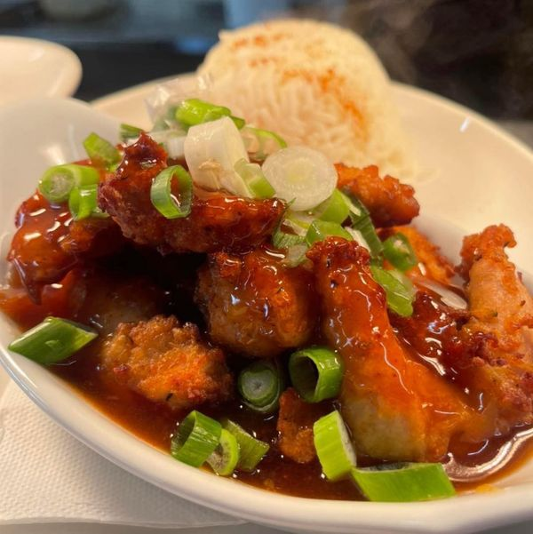
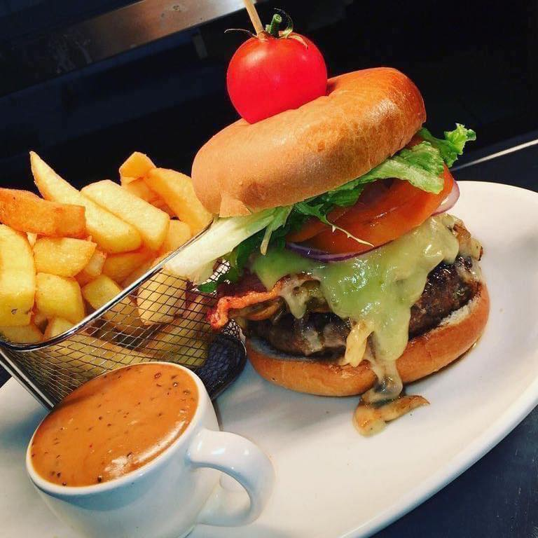
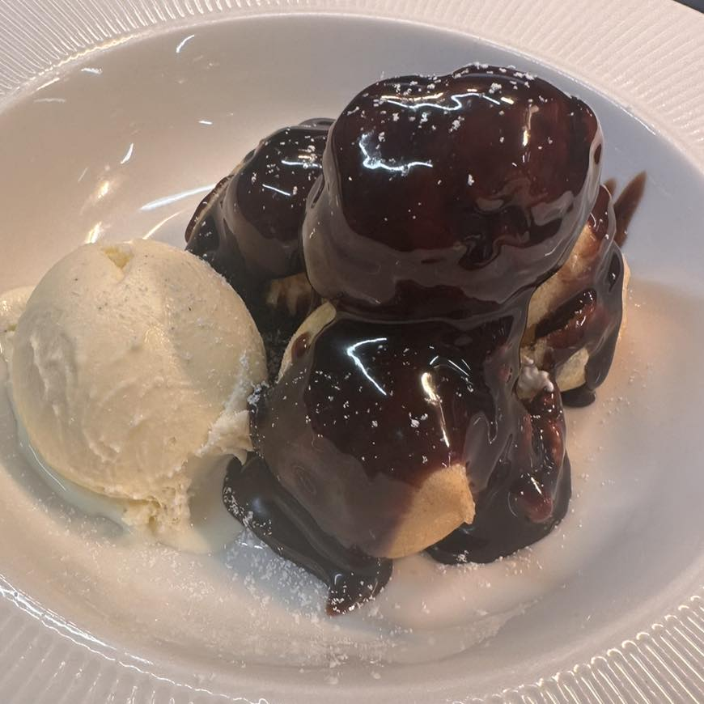

Lunch
Served from 12pm
- Full Irish Breakfast, Served with Toast & Tea/Coffee
- Filled Wrap OR Toasted White/Brown Sandwich
Sandwiches Served with Salad/Chips
2 Fillings -
Fillings
Meat
Turkey
Ham
Bacon
Pepperoni
Chorizo
Cheese
Brie
Cheddar
Extras
Stuffing
Tomato
Red Onion
Cucumber
Salad Leaves
Celery
Sweetcorn
Peppers
Beetroot
Pineapple
Sauces
Sweet Chili
Barbeque
Garlic Mayonnaise
Mayonnaise
Cranberry Sauce
Taco Sauce
Salad Cream
- Sandwich & Soup Combo
Starters
- Sweet & Spicy Asian Chicken Salad
- Spicy Beef
w/ Salad Garnish - Chicken Tacos
w/ Salad Garnish - Homemade Vegetable Soup
- Deep Fried Garlic Mushrooms
w/ Garlic Dip - Chicken Liver Pate
w/ Toast - Baked Brie
w/ Cranberry Sauce - Mussels Marinaire
- Bacon & Cabbage Croquettes

Main Courses
- Scallop Mornay
- Pan-fried Fillets of Salmon
w/ Lemon & Butter Sauce - Pan-fried Fillet of Hake
- Fish & Chips
- Homemade Lasagne
w/ Salad - Warm Chicken Salad
- Crispy Chicken Fillet
w/ Pasta - Supreme of Chicken Kiev
- Cajun Chicken Pasta
w/ Garlic Bread - Roast Stuffed Turkey & Baked Gammon
w/ Roast Gravy - Roast Sirloin of Beef
w/ Roast Gravy - All Served with Potato & Buttered Vegetables

Desserts
- Fresh Fruit Pavlova
- Eton Mess
- Rice Pudding
- White Chocolate Cheesecake
w/ Chocolate Sauce - Homemade Chocolate Brownie
w/ Ice Cream & Butterscotch Sauce - Apple Crumble Tartlet
w/ Ice Cream & Cream - Carrot Cake
w/ Ice Cream & Cream - Carageen
w/ Ice Cream & Cream - Jelly & Ice Cream
- Ice Cream
w/ Butterscotch Sauce
